Make a narrated video, one scene at a time
SceneForge Studio turns a script, pictures and clips into a finished video with voice, captions, music, titles and effects. This guide walks through every part of the app, from your first project to export. The AI that matters runs on your own computer, free.
Getting started
Install the app, open the sample project, and render your first scene in about five minutes.
Install
- Download the installer for your system from the Releases page: Windows-x64-Setup.exe for Windows 10/11, .AppImage or .deb for Linux, .dmg for Apple Silicon Macs (experimental).
- Run it. On Windows, if "Windows protected your PC" appears, click More info → Run anyway. The installer is not code-signed yet.
- Open SceneForge Studio. A short tour points out the main areas; you can replay it any time from Help → Show tour.
Everything the app needs is inside the installer: the video engine (FFmpeg), fonts, 400 stickers and the small background-removal model. The caption model (Whisper, about 145 MB) downloads once the first time you make captions; after that the app works offline.
Your first five minutes
- On the Projects page, click Try a sample project. A three-scene project opens with pictures, captions, a title, stickers, effects, music and sound effects.
- Click Render scene under the preview. A progress bar shows the render; a few seconds later the finished scene plays.
- Press Space to play the whole timeline from the rendered scenes.
- Change something (a caption word, an effect, a sticker) and render again. That loop is how you work in SceneForge.
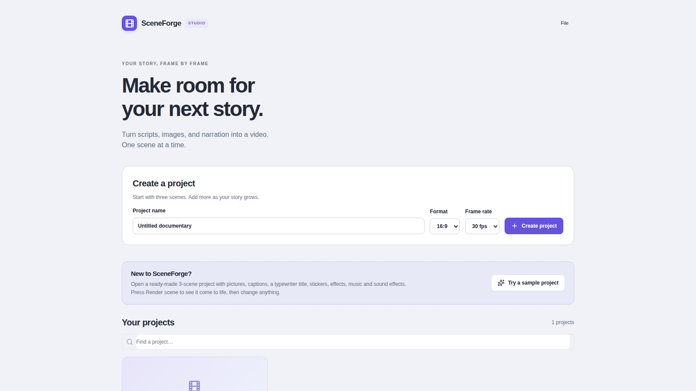
The editor at a glance
Four areas, always in the same place: scenes on the left, the preview in the middle, scene settings on the right and the timeline underneath.
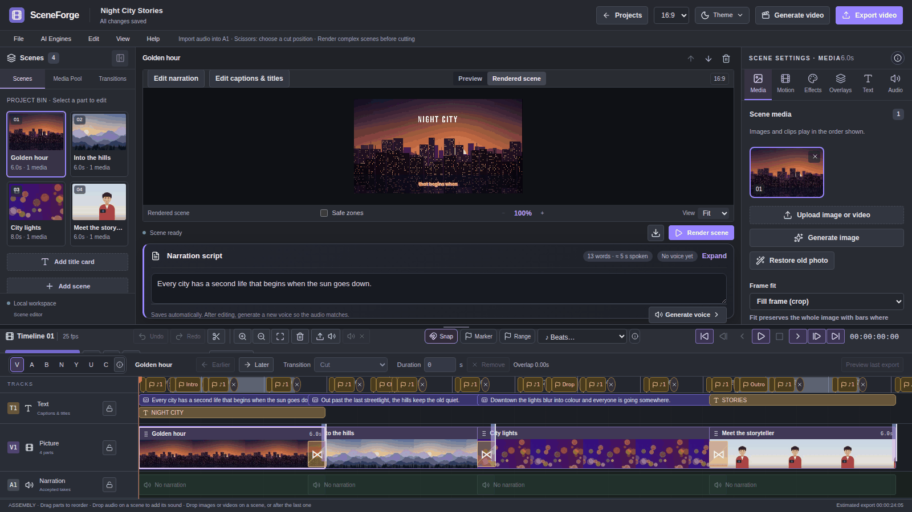
Scenes, Media Pool, Transitions
The left panel lists your scenes in order. Media Pool holds every file you imported; Transitions sets how scenes change.
Preview
Preview shows a fast editing view; Rendered scene plays the real render. Use Safe zones to keep text clear of phone buttons.
Scene settings
Tabs for the selected scene: Media, Motion, Effects, Overlays, Text, Audio, Clip Audio. Every tab has an ⓘ button that explains it.
Timeline
Text on T1, pictures on V1, narration on A1, video sound on A2 and free audio tracks A3–A8. Play, cut, trim and mark here.
Projects and restore points
A project is your whole video: its scenes, media, audio and settings.
Create a project
- On the Projects page, type a Project name.
- Choose a Format: 16:9 for YouTube, 9:16 for Shorts, Reels and TikTok, 1:1 or 4:5 for Instagram.
- Choose a Frame rate (30 fps suits most videos) and click Create project. It starts with three empty scenes.
Restore points
SceneForge saves a restore point every few minutes while you edit, but only when something changed, and keeps the last 20. Open File → Restore points… to see them, or to save a named one before a big change (for example "Before recolouring").
Open this version opens a copy of the project as it was. Your current project is never overwritten.
Make a vertical copy
File → Create vertical 9:16 version (auto-reframe) makes a portrait copy of a 16:9 project. The local AI follows the main subject in every shot so it stays in frame. Details are in Creator time-savers.
Scenes, pictures and video
Each scene is one part of your story: a picture or clip, its narration, its captions and its look.
Add media
- Drag images or videos from your computer onto the timeline or onto a scene, or use File → Import files to Media Pool….
- Files dropped on empty starter scenes fill them in order; extra files become new scenes.
- In the Media tab you can also Generate image with an AI image engine, or Restore old photo.
Arrange scenes
- Drag scenes on the V1 track to reorder them, or use Earlier / Later above the timeline.
- Pick a Transition and its Duration for the selected scene (Dissolve, Slide, Wipe, Circle open, Zoom, Smooth and more).
- Right-click a scene for Split scene at playhead, Duplicate, Copy, Paste and Ripple delete.
Length of a scene
By default a scene lasts as long as its narration plus a little breathing room. In the Media tab, set Timing mode to Fixed duration to choose an exact length in seconds.
Motion and speed
Motion and Effects changes stay in a local draft. Use Render draft preview to check the actual renderer output before saving. Apply changes saves the draft as one Undo step; Cancel changes restores saved settings. Apply or Cancel before leaving the editor. Minimize or close the companion preview without discarding the draft. The section chooser jumps to the matching controls and shows whether they affect the selected media, scene, or entire project.
The Motion tab sets the camera movement on a still picture: zoom in or out, pan in any direction, close-up, or a Ken Burns move between two points you choose. For video clips it sets speed, freeze frames and smooth slow motion, plus framing and crop.
Narration and voices
Write the words for each scene, then turn them into a voice or record your own.
- Select a scene and type or paste its words into Narration script under the preview. The counter shows words and spoken seconds.
- Click Generate voice. Choose a voice engine: local voices (Kokoro, Chatterbox) are free; cloud voices (OpenAI, ElevenLabs) use your own API key.
- Listen to the take in the Audio tab and accept it. It appears on the A1 track with its waveform.
To use your own recording instead, drop an audio file on the scene's A1 lane, or use File → Import audio to selected scene….
Edit the narration
- In the Audio tab, trim the start and end, set the volume and add fades.
- Isolate voice removes music and background noise behind speech, using a local AI model.
- Right-click the narration on A1 and choose Move narration to timeline audio (A3) to cut it freely with the timeline tools.
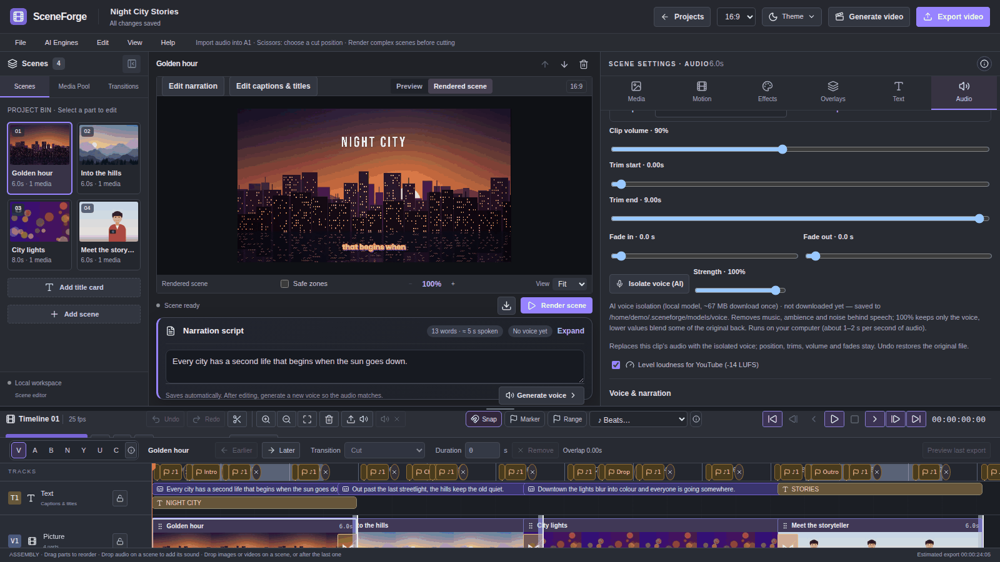
Captions
Captions can come from the speech automatically, in any language, with word-by-word timing.
Make captions automatically
- Open the Text tab. In Auto captions, leave Language on Detect automatically.
- Pick a Caption style and how many Words per caption clip (3 is a good start for Shorts).
- Choose Captions in: the spoken language, English (translated), or Both (the spoken words with English underneath).
- Click Generate captions. Local Whisper · free runs on your computer; the first run downloads the model once.
Each caption becomes a block on T1. Click one to edit its words or timing. You can also type captions by hand in On-screen captions.
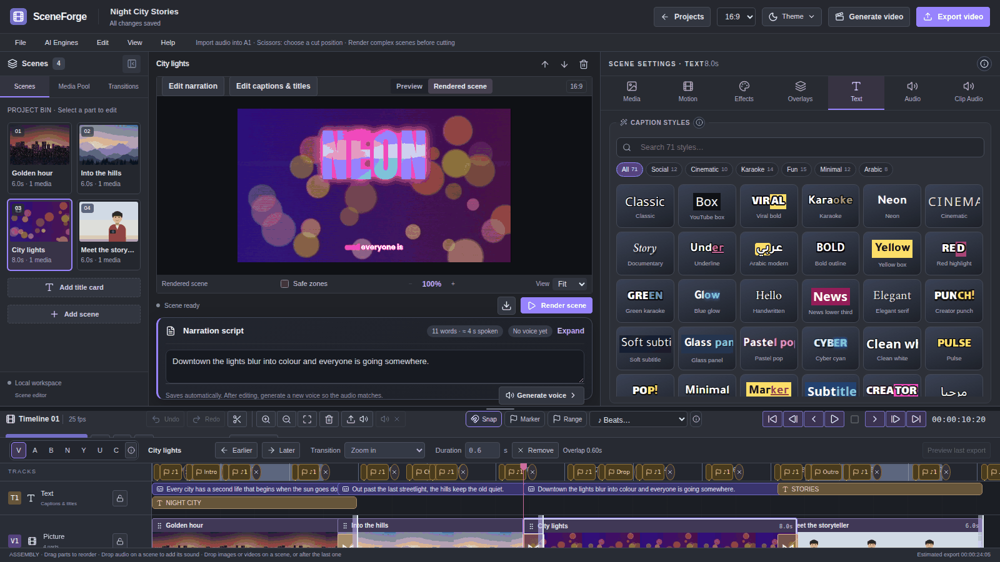
Style and animate
Under Caption style set the font, size, colours, outline, shadow, box, position, phrase or word-by-word display, karaoke highlight and an entrance animation. Arabic captions are laid out right to left automatically.
Typewriter
The Typewriter box types your captions letter by letter. Turn on Typewriter reveal, pick Slow, Natural or Fast, and tick Synchronized keystrokes for a typing sound. Preview sound plays it without rendering; Upload typewriter sound uses your own recording.
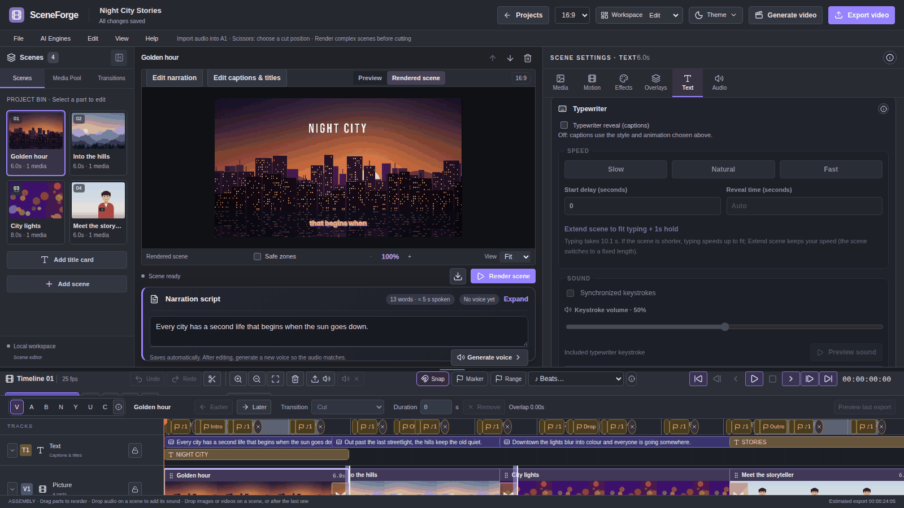
Titles and templates
Titles are separate from captions: each one is its own timed layer on T1, with its own font and animation.
Add Text
A simple title line.
Add Text Box
A paragraph that wraps inside a width you set.
Add Text+
An advanced title with letter spacing, highlight colours and letter-by-letter animations.
For each title set the X and Y position, font size, start and end time, font, alignment, outline, shadow, colour and one of more than 25 animations: fades, slides, wipes, clock and iris reveals, typewriter, neon, bounce and per-letter or per-word effects. Move titles with the X and Y controls in Text settings.
Templates
Under Templates in the Text tab, one click adds a ready-made set of layers: Lower third (name and role), Intro title, Outro / end card, Chapter heading and Quote. Then change the words like any title.
For a full-screen title card on its own background, use Add title card in the scene list.
The timeline
The timeline shows the whole video. Scenes play on V1; free audio clips sit on A3–A8, where the professional edit tools work.
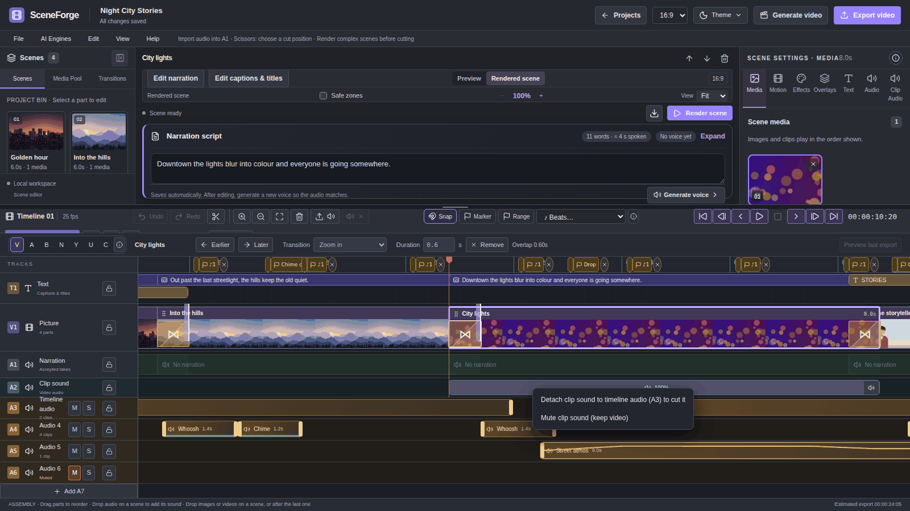
Stack video, images and text
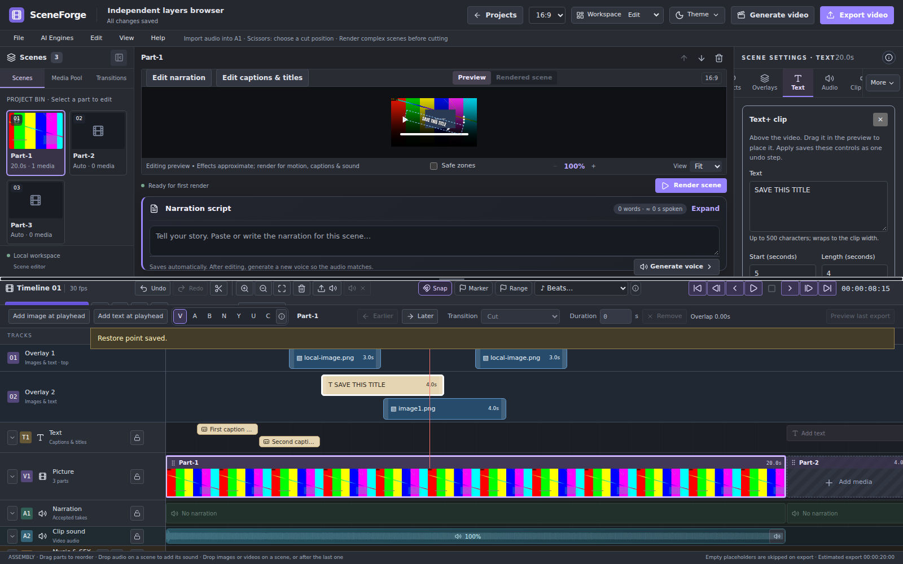
- Move the playhead to the time you want, for example five seconds into a twenty-second clip.
- Choose Add video at playhead or Add image at playhead, or drag a video or image from Media Pool or a folder onto an upper Overlay track.
- For text, open Text → Text overlays. Drag a Text, Text box or Text+ card to a track. Clicking a card adds it at the playhead. These Whole-video tracks clips can span scenes. The Scene titles & labels buttons below add within-scene titles with the existing animation and keyframe tools.
- Drag a clip left or right to move it in time, or up/down to change track. Drag either edge to change its length. Click the clip for text, timing and placement controls. Move a slider or type an exact value. Check Preview before applying, then choose Apply changes to save. The draft preview opens beside the main monitor on a still from the current scene. Controls remain in Media for video/images and Text for text clips. Minimize or close the second preview without losing your draft; Restore draft preview opens it again. The main monitor shows saved layers.
- Drag the video, image or text in the preview to place it. Track 1 appears above track 2. The layers appear in timeline playback and Export video; scene downloads contain the scene’s own layers.
Right-click an overlay for editing, split, duplicate or delete. Ctrl+Z undoes an edit; Ctrl+Y redoes it. S splits the selected overlay at the playhead; Ctrl+C, Ctrl+X, Ctrl+V and Ctrl+D copy, cut, paste and duplicate. Delete removes the selected overlay while keeping the video. Ctrl+S saves pending text before creating a restore point. Shortcuts stay inactive while typing.
Video, images and text keep their own timing across scenes. A stacked video starts muted; open its controls to change the source start, volume or mute setting. Moving its left edge advances the source start. Use Export video to hear the full stack. Audio clips stay on the audio tracks. Empty starter scenes are skipped on export, and overlay timing follows the footage around them. Up to 64 overlay clips and six tracks are supported. Existing scene captions and titles remain on T1; generated caption segments show as separate beige boxes with their words and times.
Play and move around
- Space plays the timeline from your rendered scenes, with music and timeline audio. Scenes that are not rendered yet show a still and a Render missing scenes button.
- J K L play back, pause and play forward (press L again for 2× and 4×). ← → step one frame.
- Click or drag on the ruler to place the playhead. Ctrl+mouse wheel zooms the timeline.
The overlay save button shows Saved after success, then returns to Apply changes when you edit again. Failed saves retain your draft for retry.
In each generated caption clip, choose an Emoji and its left/right side. All 322 bundled emoji are available. Use Browse emoji for colour thumbnails, search by name or symbol, and filter by category. Bundled colour artwork follows that caption’s time span beside the caption text. Choose None to remove it. Rendering confirms placement; up to 64 caption clips per scene can carry emoji. Typewriter captions do not show timed emoji.
Edit tools for audio clips (A3–A8)
| Key | Tool | What a drag does |
|---|---|---|
| V | Select | Moves a clip; drag up or down to change track. Ctrl+click selects several. |
| A | Track select forward | Selects the clip and everything after it on that track. |
| B | Ripple trim | Trims an edge and moves later clips so no gap opens. |
| N | Roll | Moves the cut between two touching clips. |
| Y | Slip | Changes which part of the source plays, keeping position and length. |
| U | Slide | Moves a clip between its neighbours; they adjust around it. |
| C | Blade | Click to cut. Shift+C cuts every unlocked track at the playhead. |
Tracks
- M mutes and S solos a track; the lock icon protects it from edits. Add A4 adds another audio track (up to A8).
- The arrow at the left of a track header collapses it to save space.
- Waveforms show on narration, clip sound and every audio clip.
Markers and beats
- Marker adds a named bookmark at the playhead; Range marks the selected clip or scene as a span. Click a marker's dot to change its colour.
- ♪ Beats… finds the beat of your music and adds markers on every beat or bar. With Snap on, cuts snap to them.
- Right-click an audio clip and choose Add marker on this clip for a marker that moves with the clip.
Undo
Ctrl+Z undoes and Ctrl+Shift+Z redoes timeline edits. For bigger rollbacks, use restore points.
Music and audio mixing
Three kinds of sound mix into the final video: narration (A1), each video's own sound (A2) and free audio clips (A3–A8), plus one music bed for the whole project.
Background music
- Open the Audio tab and scroll to Music & finishing.
- Choose a music file, set its volume and fades.
- Set Duck to lower the music automatically while someone speaks.
- Fit music trims or loops the track to the video length; beat sync lines cuts up with the beat.
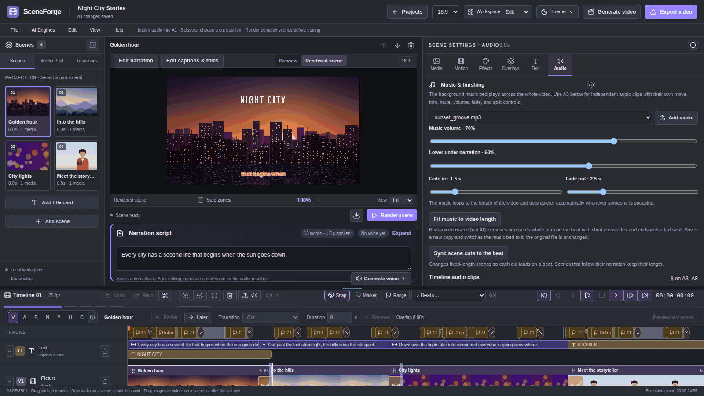
Sound effects and extra music (A3–A8)
The Audio tab groups controls into Trim & listen, Level & fades and Voice cleanup & style. Preview speed and Hear original file affect listening only. Mute narration restores its previous volume when switched off. Cleanup presets preserve trim and fades; render to hear voice effects.
Music & finishing groups background music, timeline clips and final loudness. Voice first, Balanced and Music forward set music level and ducking. Timeline clip controls include an exact start time, soft fades and duplication onto the next audio track; these edits support Undo/Redo.
Voice censoring: In Audio, Clip Audio or the selected timeline clip, enter From/To times from the original file and choose Bleep or Mute. Add a range, listen or render to check it, and remove it to restore the original sound. Trimming and splitting keep ranges attached to the source. Censoring one track leaves other tracks audible and does not hide caption words. Narration Play clip auditions censoring; render video/timeline clips to audition the exact result.
For narration with linked auto-caption word timings, open Find words in timed narration. Enter words separated by commas or lines, review the matches, then Add reviewed matches. The transcript must belong to the selected narration source; regenerate old captions if word matching is unavailable. Matches may need timing adjustment after listening. No speech-recognition request runs from the censor controls.
Drop MP3, WAV, M4A, AAC, OGG or FLAC files on an audio track. Select a clip to set its volume, trims and fades in the Audio tab.
- Lower under voice (auto-ducking) makes the clip quieter whenever narration or clip sound plays. Use this on every clip on A3 applies it to the whole track.
- Volume envelope adds keyframes that ramp the level up or down over time; the line shows on the clip.
- Group selected clips (Ctrl+G) moves clips together.
Clip sound (A2)
Click a video's A2 block to open Clip Audio: volume, mute, fades and ducking under narration for that video's own sound. Right-click to detach it to A3 and cut it freely.
Effects and looks
The Effects tab gives each scene a look: a colour grade, film treatment or creative effect, each with its own settings.
- Open Effects. Hover a look tile to preview it on the picture; click to apply.
- Set Effect strength, then fine-tune under Effect settings (for example warmth, grain or glitch speed).
- Use Adjust for light, colour and detail, or import a Color LUT (.cube).
- Click Render effect preview to see the exact result.
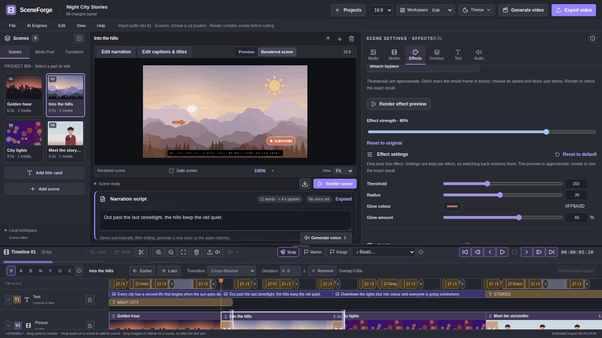
More effects, in groups
| Group | Effects |
|---|---|
| Colour grading | Split toning, Colour wheels |
| Light & lens | Lens flare, Light leaks |
| Camera & motion | Camera shake, Wiggle, 3D photo (parallax) |
| Point things out | Annotations (arrows, circles, boxes, callouts), Spotlight, Map route |
| Layout & privacy | Split screen, Blur or pixelate areas |
| Scene intro | Countdown intro |
| Combine & reuse looks | Effect stack (order and bypass), Look presets (save, import and export packs) |
Click a group to open it. A group opens by itself and shows "1 on" when one of its effects is active.
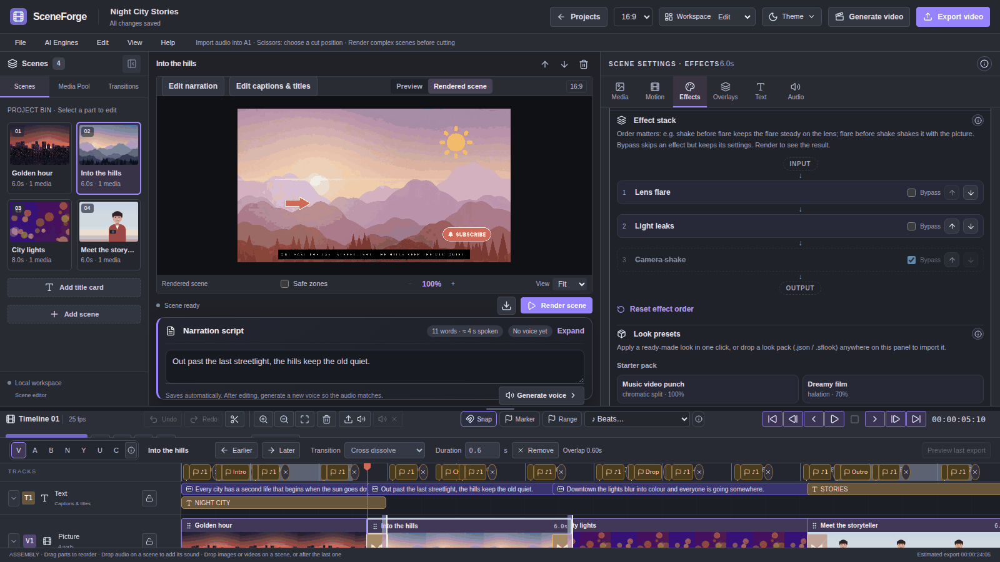
Stickers and overlays
Overlays are extra layers on top of the scene: stickers, emoji, logos, picture-in-picture videos and titles made as images.
- Open Overlays. Under Stickers & emoji, search or browse 400 items and click one to add it.
- Drag it on the preview to place it; drag a corner to resize.
- Set its entrance and exit (Fade, Slide, Rise, Zoom pop), show-from and until times, and a loop motion (Float, Bob, Pendulum).
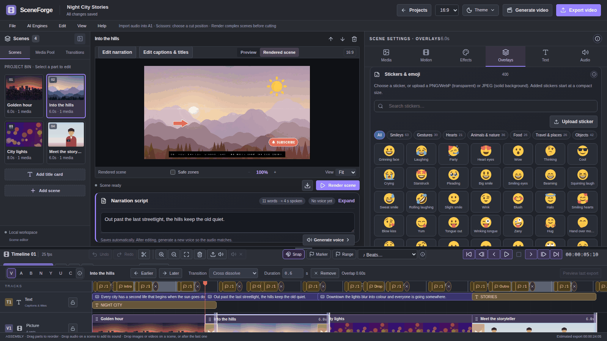
Picture in picture adds another image or video as a framed layer. Move & green screen removes a green or blue background (chroma key).
Keyframe animation
Keyframes make a title, sticker or overlay move, grow, turn or fade over time. You set how it looks at two or more moments; SceneForge animates the change between them.
Animate a title or sticker
- Select the scene and open the layer: a title in the Text tab, or a sticker or overlay in Overlays. Its Keyframes strip is at the bottom of the layer's settings.
- On the timeline ruler, click where the movement should start. The strip shows Playhead with that time, measured from the start of the layer.
- Place the layer where it should start: drag an image overlay on the preview; for text, use the controls for X, Y and size. Click Add keyframe at playhead. A diamond appears on the strip.
- Click the ruler again where the movement should end, for example two seconds later.
- Move, resize, rotate or fade the layer to how it should end, then click Add keyframe at playhead again. Now there are two diamonds.
- Click Render scene and play it. The layer moves smoothly between the two keyframes.
Reading the keyframe strip
| You see | It means |
|---|---|
| 1/32 | Keyframes on this layer, out of 32 allowed. |
| Playhead 0.41s | Where the timeline playhead is, counted from the start of this layer. |
| Red line on the strip | The playhead's position along the layer. |
| Diamond (yellow when selected) | A keyframe. Click it to jump the preview there. |
| Update keyframe at playhead | Shown when the playhead sits on a keyframe: saves your changes into that keyframe. |
| t box | The keyframe's exact time in seconds; type to move it. |
| Linear / Ease in / Ease out / Ease in-out | How the movement speeds up or slows down as it arrives at this keyframe. Ease in-out looks the most natural. |
| X 50 · Y 39 · Size 58 · Rot 0 · Op 100 | The layer's position (percent of the frame), size, rotation in degrees and opacity at this keyframe. |
| ↻ and 🗑 | Replace this keyframe with the current values, or delete it. The ✕ at the top clears all keyframes. |
Cutout and special titles
Three tools in the Overlays tab create looks that usually need a pro editor.
Text behind the subject
Subject cutout · AI beta cuts the person or object out of the picture so captions and titles pass behind them.
- Use a scene with one still image (Camera movement: Static) or one video clip up to 20 seconds at normal speed.
- Pick a Model: Best general · IS-Net for most pictures, People for whole bodies, Fast for video.
- Click Put text behind subject (or …moving subject for video), then render the scene.
If a thin halo of background remains, move Edge to shrink by 1–3 px. Remove background → Media Pool saves the cutout as a transparent PNG instead.
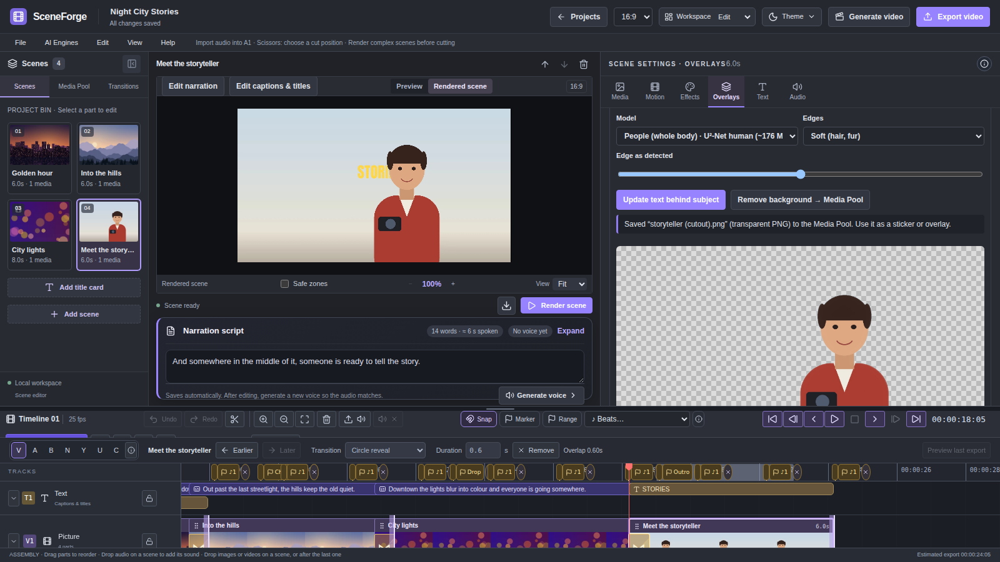
Textured title
Fills big letters with a texture: one of nine built-in patterns (lava, neon, gold, chrome, marble, ice, fire, pixel, galaxy), any picture in your Media Pool, or a texture made from a prompt by your image engine. Set font, size, glow and outline, then Add textured title.
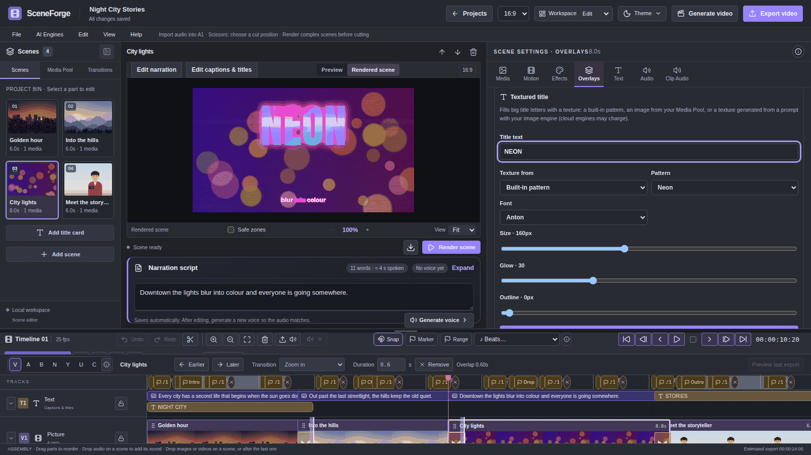
Video inside text
Covers the screen with a solid colour and cuts your title out of it, so the scene's video plays inside the letters, like a documentary year or place title.
- Use a scene with a video or picture, open Overlays → Video inside text and type the title (for example 1942).
- Choose the font, Card colour, Letter size, position, outline and card opacity. Long titles shrink to fit the screen.
- Optional: tick Put the person or object in front of the title to run the cutout so the subject stands in front of the card.
- Click Add video-inside-text title, then render.
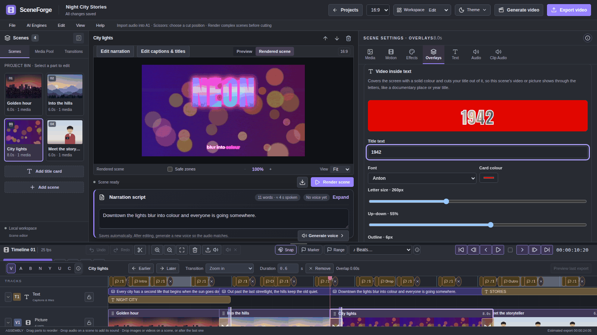
Creator time-savers
Remove silences
Right-click narration, a video clip or an audio clip and choose Remove silences…. Adjust threshold and padding, review the list and time saved, then apply. One undo reverses it.
Remove filler words
Remove filler words… finds um, uh, hmm, "you know", "I mean" and Arabic fillers from the caption transcript. Untick any you want to keep.
Auto-reframe to 9:16
File → Create vertical 9:16 version follows the subject in every shot. Per shot, Motion offers Center, Follow subject or Manual.
Sample project
Try a sample project on the Projects page shows every major feature in a ready-made project.
AI engines
You can make a whole video without any AI. Where AI helps, SceneForge uses free local models first and cloud services only when you choose them.
| Task | Free on your computer | Optional cloud (your key) |
|---|---|---|
| Captions | Whisper | OpenAI Whisper, ElevenLabs Scribe |
| Background removal, reframe | U²-Net, IS-Net | – |
| Voice isolation | MDX-Net | – |
| Voices | Kokoro, Chatterbox (in Docker) | OpenAI, ElevenLabs |
| Images | Stable Diffusion WebUI | OpenAI, Gemini, Cloudflare, Together, Hugging Face |
| Text to video | ComfyUI | Google Veo, Runway |
- AI Engines in the menu bar explains each engine and opens Add or change API keys. Keys are stored in your system's credential store, never in project files.
- Every paid request shows an estimated cost and waits for your confirmation.
- Help → AI models… shows the downloaded models, their disk use, and lets you delete or re-download them.
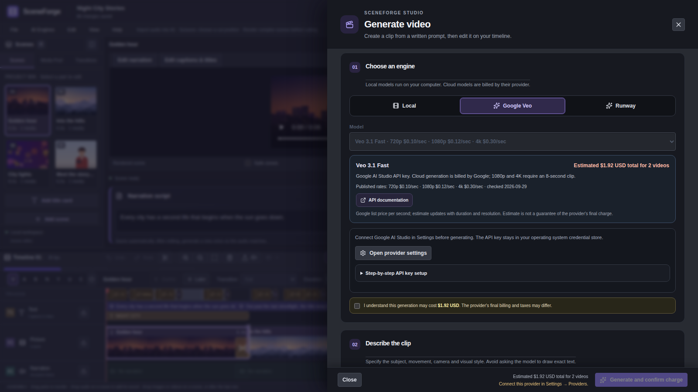
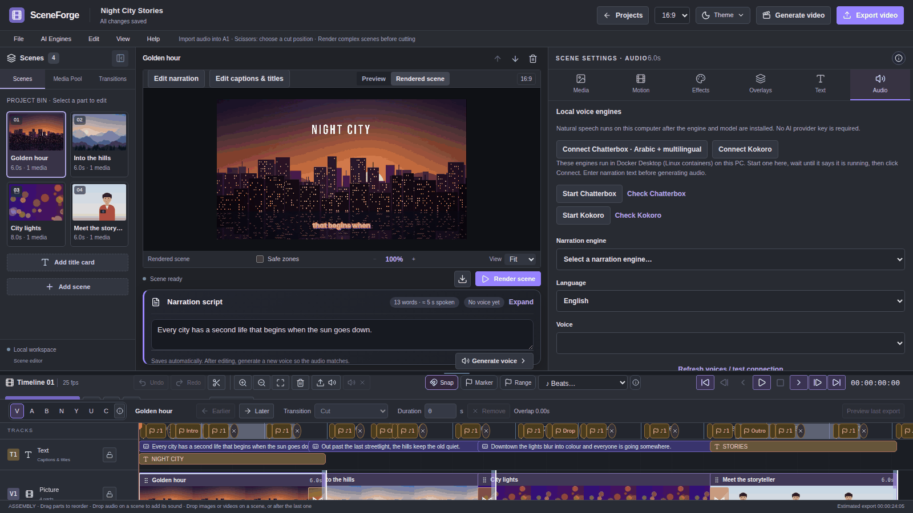
Export and share
- Click Export video at the top right.
- Pick a preset. Open Advanced to change resolution, quality or the Encoder (Auto, CPU or GPU).
- Click Export. When it finishes, the share dialog offers the file location and next steps for each platform.
| Preset | Output |
|---|---|
| YouTube | 1080p · 30 fps · H.264 |
| YouTube 4K | 2160p · H.264 High |
| TikTok · Reels · Shorts | 1080×1920 · 30 fps |
| Instagram feed | 1080p · H.264 |
| Small file | 720p · H.265, for sharing |
| For editing | ProRes MOV (large) |
| Animated GIF | No sound, short clips |
| Audio only | MP3, voice and music |
Captions can also be exported as SRT or VTT files for YouTube. With an NVIDIA graphics card, GPU export is several times faster; if it fails, SceneForge finishes on the CPU automatically.
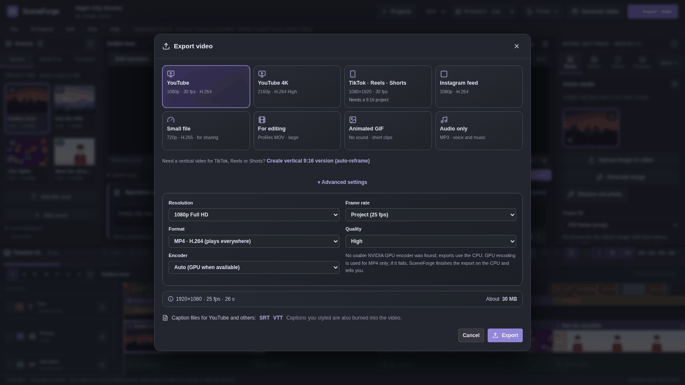
Workspaces and preferences
| Workspace | Use it for |
|---|---|
| Edit | The standard layout: scenes, preview, scene settings and timeline. |
| Color | Wider scene settings on the Effects tab, shorter timeline. |
| Audio | Taller timeline and the Audio tab; the preview gets smaller. |
| Review | Large preview with scene settings hidden. |
Switch with the Workspace menu at the top or View menu. Theme sets the look (dark, Daylight and more). File → Preferences… (Ctrl+,) sets density, accent colour, reduced motion and defaults. Drag the line between the preview and the timeline to resize them.
Keyboard shortcuts
Shortcuts work while you are not typing in a text field. On macOS, use ⌘ instead of Ctrl.
| Keys | Action |
|---|---|
| Space | Play or pause the timeline |
| J K L | Back 5 s, pause, play (L again for 2× and 4×) |
| ← → | Previous / next frame |
| Shift+← → | Previous / next scene |
| Home End | Timeline start / end |
| Ctrl+wheel | Zoom the timeline or the preview |
| V A B N Y U C | Select, track select, ripple, roll, slip, slide, blade |
| Shift+C | Cut every unlocked audio track at the playhead |
| Ctrl+Z / Ctrl+Y or Ctrl+Shift+Z | Undo / redo |
| Ctrl+C X V | Copy, cut, paste |
| Ctrl+D | Duplicate |
| Ctrl+G / Ctrl+Shift+G | Group / ungroup audio clips |
| Delete / Shift+Delete | Delete / ripple-delete |
| Ctrl+N / Ctrl+O | New project / open project |
| Ctrl+A | Select all scenes; on an audio track, select all unlocked audio clips |
| S | Split the focused scene, image, text or audio clip at the playhead |
| M | Add a named marker at the playhead |
| + / - | Zoom the timeline in / out |
| Ctrl+S | Save current edits and a restore point |
| Ctrl+E | Open Export video |
| Ctrl+/ or ? | Open searchable keyboard shortcuts (also in Help) |
| Esc | Close a dialog or menu |
Troubleshooting
| Problem | What to do |
|---|---|
| Windows says "Windows protected your PC" | Click More info → Run anyway. The installer is safe but not code-signed yet. |
| Local captions do not start | In the Text tab click Check local captions. It tests the model and can repair it. The first run needs internet once to download the model. |
| The preview looks different from the render | The editing preview is approximate. Click Render scene for the exact result. |
| A scene shows a still while playing | It is not rendered yet. Click Render missing scenes. |
| Text behind subject is refused | The scene needs one image with Static camera movement, or one video clip of up to 20 s at normal speed. |
| I want an earlier version back | File → Restore points… and Open this version. |
| Something else went wrong | Click show details on the red message, then Help → Collect diagnostics and attach the files to a GitHub issue. They contain no API keys and no media. |
SceneForge Studio is free, open-source software (GPL-3.0). Source code, releases and issue tracker: github.com/EzioDEVio/SceneForge. Emoji graphics by Twemoji (CC-BY 4.0).
Finishing touches
In Effects, use Quick access → Vignette · Bars · Sharpen, or open More effects → Finishing touches. Search effects also finds these additional groups. Edge vignette darkens the picture edges; Cinema bars adds black bars inside the existing frame; Detail sharpening brings out fine detail. Each has an on/off switch and amount slider. Render for the exact result. All three participate in effect-stack ordering, bypass and saved look presets. Existing effect groups remain available.
Story tools: scripts, beats, stabilization and templates
Open these tools from the Edit menu. Changes must finish saving before you open a tool.
- Script → Scenes: Paste your script or open a TXT/Markdown file. Split at blank lines, or use English/Arabic scene headings for structured scripts. Choose Preview scenes, review or edit narration, then add the batch. The tool closes and opens the first new scene for editing; existing scenes stay in place. Leave optional setup off to add pictures and voices later, or enable Prepare pictures, narration, captions & motion. Select Media Pool pictures or a connected local Stable Diffusion engine; choose local narration, caption style, image motion and optional rendering. Chatterbox supports Arabic narration; Kokoro is offered for English. Estimated script caption boxes need timing review; local Whisper transcription requires an installed model. Review prompts and narration before adding. Existing scenes stay unchanged, and failed setup steps leave the new scenes editable. Close the tool, then Undo/Redo affects the whole added batch without generating again.
- AutoCut: Select a scene with pictures. Choose Timeline markers for cuts you placed with Marker, or choose existing beat markers, the music bed, or a timeline audio clip. Choose every marker/beat, every 2, or every 4. Preview cut times, source thumbnails and a scrubbed sequence before applying. This sequence preview shows source frames; render after Apply to verify motion and sound. Pictures repeat in order while narration, captions and overlay timing stay in place. Videos restart at their current in-point; beat intervals must fit the trimmed excerpt. AutoCut needs an unlocked Picture track and sequential media without countdowns, ramps or freeze frames. Render the scene to see the result. Undo restores its original clips.
- Stabilize video: Reduces small handheld movements in the selected scene's video clips. Start with movement range 50, apply, close the tool, then render the scene to see the result. Export uses the same processing. Images and audio timing stay unchanged. Mirrored edges fill movement gaps. Turn stabilization off or use Undo to restore the previous setting.
- Project templates: Name and save a project's setup, then use it here or on the Projects page to create a separate editable project. Scenes, text, timing, effects and media references are retained. Templates stay on this computer and rely on the original media files. Deleting a template keeps projects already made from it.